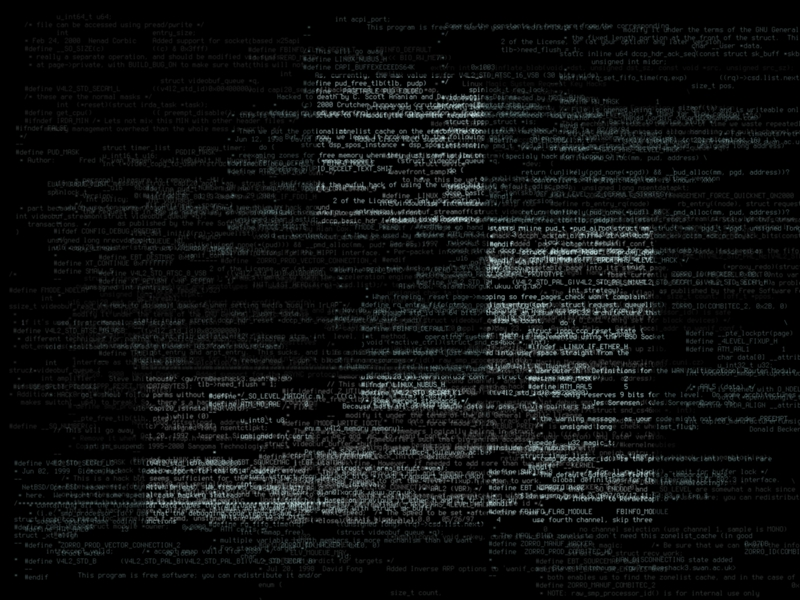

Twitter Bootsrap 3.3.2
Eclipse Luna 4.4.1
Software Engineer
Why I chose Twitter Bootstrap?
When I sat down to plan my website for the coding challenge,
to be honest my biggest constraint was time. Bundled up between my course work and on campus job,
I had to figure out an effective way to be able to fulfill this challenge.
I gathered my thoughts
and remembered having used Twitter Bootstrap for one of my projects. I was familiar with using it,
it is convenient and easy to use, it has some really cool features [responsiveness - important feature]
and it therefore was the best framework to execute my idea.
Why I want to be a web developer?
Recent strides in the field
of information visualization is a proof of the fact that visually clean and aesthetic systems
are much desired by the user.
I believe I am a creative person, and I thoroughly understand
that the human perception is supreme and is heavily untapped. Web development gives me the
opportunity to amalgamate my creativity with my learned technical skills. This is why I have
enjoyed being a web developer and hope to receive more opportunities to excel in the field.
"Creativity takes courage"